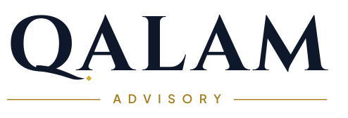
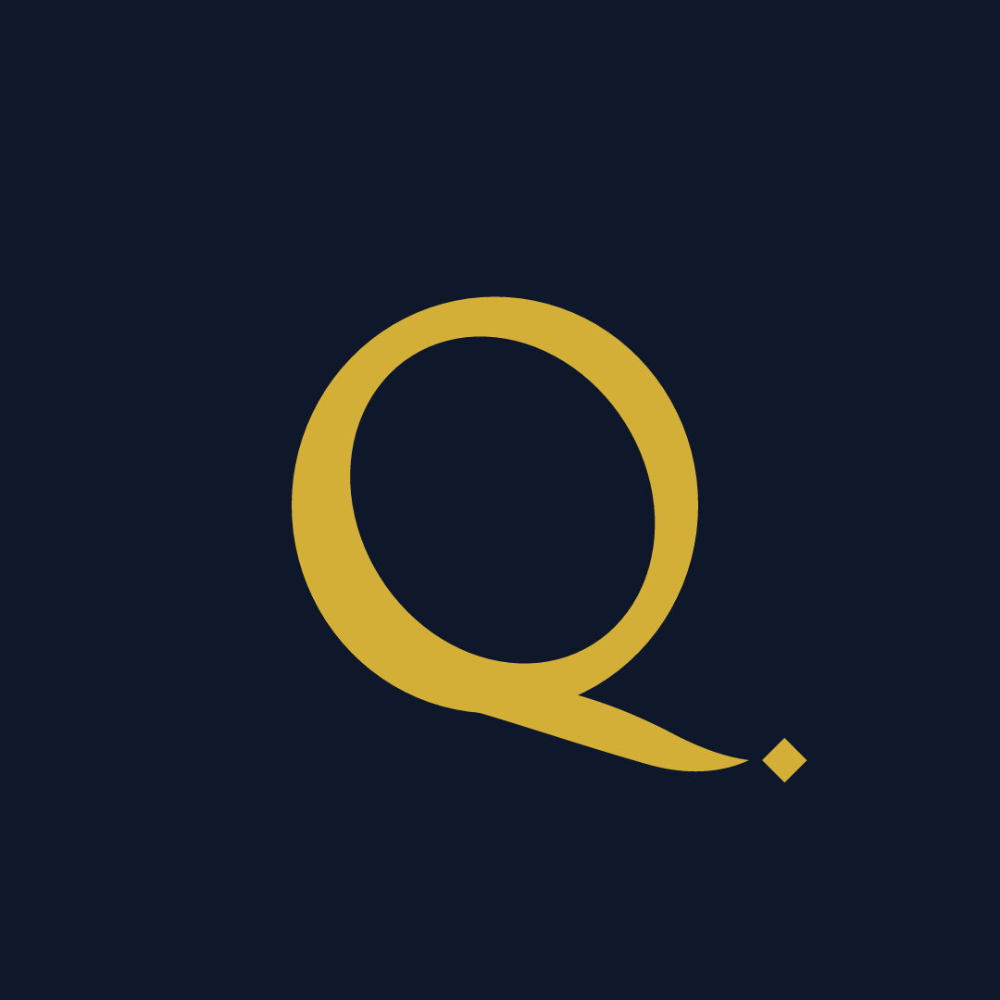
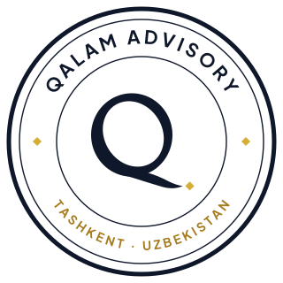
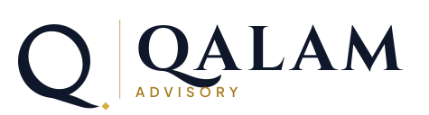

Qalam: Logo Round 2
This round is built the way identity studios work: one owned idea, custom-drawn lettering and real calligraphic contrast instead of a stock icon. The Q is drawn as a broad-nib calligraphy stroke (thick and thin, as a real qalam writes), and its tail ends in the nuqta, the calligrapher's unit of measure. Each concept is shown in real use below.
B · Custom wordmark
RecommendedHow premium advisory firms present themselves (law firms, private banks, Big 4): the name itself is the logo. The Q's tail is hand-drawn as a single pen stroke ending in the gold nuqta, a detail no font has. It works alongside the calligraphic Q monogram as an icon.



Ziyodillo MirzamoydinovFounder & Managing Partner
+998 99 200 23 51 · t.me/Ziyodillo_84
Mirobod District, Tashkent

- Looks established and premium, never "clip-art"
- The most distinctive detail (the pen-stroke tail) is subtle and owned
- Scales from business cards to signage
- On its own it's wide; use the Q monogram for square spaces
C · Seal (muhr)
Inspired by the seals of Bukhara and Ottoman chancelleries that certified contracts, which suits a firm that signs off audits. Use it as a secondary emblem: stamps on reports, certificates, packaging, social posts.


- Heritage and authority: feels like a certified institution
- Excellent as an embossed stamp on audit reports and letterheads
- Too detailed for small sizes; not a primary logo
A · Monogram + name
The calligraphic Q monogram next to the name. A classic structure, the most "icon-led" of the three.


- Strong, recognisable icon for apps and social media
- The Q appears twice, which feels less refined than B